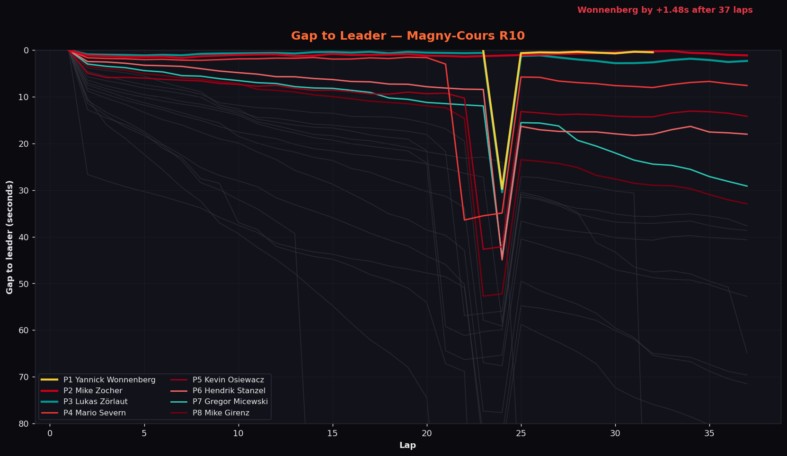
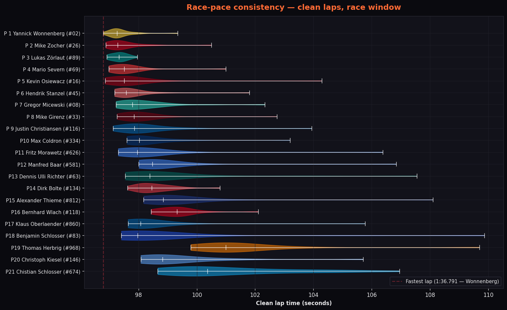
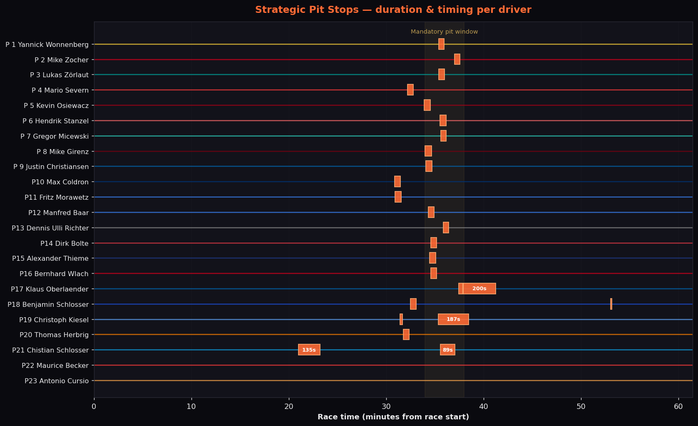

Circuit de Nevers Magny-Cours — Grand Prix
2D telemetry replay — the 61-minute race compressed to 90 seconds.
By the Numbers
Yannick Wonnenberg
Took pole, set the fastest lap, won by +1.48 s after 37 laps — the closest WCT win of the season. Best lap: 1:36.791.
Yannick Wonnenberg
The pole-sitter also set the quickest lap of the race: 1:36.791 on lap 20 in the Lamborghini. Kevin Osiewacz was within 80 thousandths.
1 DNF, 2 DNS
Only Chistian Schlosser (P21, 34 laps) failed to finish; Maurice Becker and Antonio Cursio could not start (ISP outage / wheelbase failure).
Mike Girenz
The cleanest classified drive of the day — zero incident points across 37 laps, home in P8.
Christoph Kiesel
20 incident points after an early off and a drive-through penalty for repeated track limits — still classified P20.
4 short cautions
Four brief yellow-flag periods during the race — all under 3 seconds — the new iRaceControl restart procedure delivered a clean start with no first-corner chaos.
Data Views

Top 8 highlighted — the pit cycle around lap 20 reshuffles the field, then the top three converge for a 2.5 second finish.

Clean-lap distribution per driver. Lukas Zörlaut had the tightest pace window (stdev 0.27 s over 31 clean laps).

Each orange bar = one completed pit stop, width proportional to time in pit. The mandatory pit window (highlighted, ~minute 34–38) is where the bulk of the field made their single 33–37 s strategic stop. Long bars (Klaus Oberlaender 200 s, Christoph Kiesel 187 s, Chistian Schlosser 135 s) are damage-repair time, not strategic choices.
Race Highlights
Yannick Wonnenberg made it the perfect WCT round in the data: pole, fastest lap, win. But this was a fight, not a procession. Mike Zocher — teammate at Speed Monkeys — shadowed him for the entire 75 minutes and never let the gap stretch beyond a couple of seconds. After both pitted on the same lap around the half-hour mark, Lukas Zörlaut (NEON Sim Sports Blue, Mercedes-AMG) closed the leading trio back together inside a 2.5-second window and stayed there until the flag.
The hidden story was Kevin Osiewacz’s pace: starting P6, he set the second-fastest lap of the entire race (1:36.868, just 77 thousandths off the winner) and recovered P5. Behind him Mike Girenz drove a flawless race — zero incidents over 37 laps and P8 — while Justin Christiansen headed the AM class home from P9 overall in the BMW, ahead of NEON Sim Sports Red team-mates Max Coldron and Fritz Morawetz. A complete team result for both Speed Monkeys (Pro 1-2) and NEON Sim Sports (Pro P3, plus the entire AM podium).
Full Classification
| Pos | # | Driver | Car | Laps | Best Lap | Gap | Inc | Result |
|---|---|---|---|---|---|---|---|---|
| 1 | 02 | Yannick Wonnenberg | Lamborghini Huracán GT3 EVO | 37 | 1:36.791 FL | — | Finished | |
| 2 | 26 | Mike Zocher | Porsche 911 GT3 R (992) | 37 | 1:36.874 | +1.48s | Finished | |
| 3 | 89 | Lukas Zörlaut | Mercedes-AMG GT3 2020 | 37 | 1:36.914 | +2.52s | Finished | |
| 4 | 69 | Mario Severn | Porsche 911 GT3 R (992) | 37 | 1:36.884 | +8.12s | Finished | |
| 5 | 16 | Kevin Osiewacz | Porsche 911 GT3 R (992) | 37 | 1:36.868 | +14.57s | Finished | |
| 6 | 45 | Hendrik Stanzel | Porsche 911 GT3 R (992) | 37 | 1:37.215 | +18.78s | Finished | |
| 7 | 08 | Gregor Micewski | Mercedes-AMG GT3 2020 | 37 | 1:37.228 | +30.18s | Finished | |
| 8 | 33 | Mike Girenz | Porsche 911 GT3 R (992) | 37 | 1:37.265 | +34.30s | Finished | |
| 9 | 116 | Justin Christiansen | BMW M4 GT3 EVO | 37 | 1:37.126 | +38.68s | Finished | |
| 10 | 334 | Max Coldron | Ford Mustang GT3 | 37 | 1:37.601 | +38.97s | Finished | |
| 11 | 626 | Fritz Morawetz | Ford Mustang GT3 | 37 | 1:37.304 | +51.22s | Finished | |
| 12 | 581 | Manfred Baar | BMW M4 GT3 EVO | 37 | 1:37.995 | +54.48s | Finished | |
| 13 | 63 | Dennis Ulli Richter | Aston Martin Vantage GT3 EVO | 37 | 1:37.546 | +71.85s | Finished | |
| 14 | 134 | Dirk Bolte | Porsche 911 GT3 R (992) | 37 | 1:37.623 | +73.72s | Finished | |
| 15 | 812 | Alexander Thieme | BMW M4 GT3 EVO | 37 | 1:38.173 | +74.18s | Finished | |
| 16 | 118 | Bernhard Wlach | Porsche 911 GT3 R (992) | 37 | 1:38.432 | +86.70s | Finished | |
| 17 | 860 | Klaus Oberlaender | BMW M4 GT3 EVO | 36 | 1:37.641 | +1 lap | Finished | |
| 18 | 83 | Benjamin Schlosser | Ford Mustang GT3 | 36 | 1:37.411 | +1 lap | Finished | |
| 19 | 968 | Thomas Herbrig | McLaren 720S GT3 EVO | 36 | 1:39.943 | +1 lap | Finished | |
| 20 | 146 | Christoph Kiesel | Ford Mustang GT3 | 36 | 1:38.078 | +1 lap | Finished | |
| 21 | 674 | Chistian Schlosser | Ford Mustang GT3 | 34 | 1:38.658 | +3 laps | DNF | |
| 22 | 49 | Maurice Becker | Porsche 911 GT3 R (992) | 0 | — | — | DNS | |
| 23 | 555 | Antonio Cursio | McLaren 720S GT3 EVO | 0 | — | — | DNS |
Results, lap times, gaps, incident points and pit visits on this page are read directly from in-sim telemetry recorded live by SimRacing Hub’s own iRacing race logger. Starting grid, the league’s official DSQ/DNF classifications and incident points come from the CAS League Scoring (CLS) system. Want to explore lap-by-lap? Open the interactive race explorer ↗